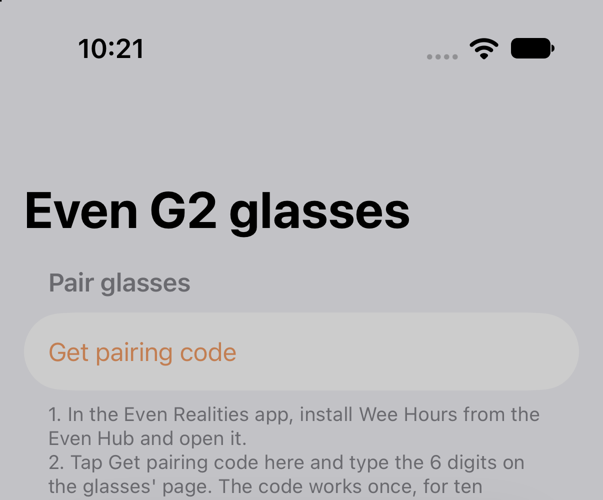
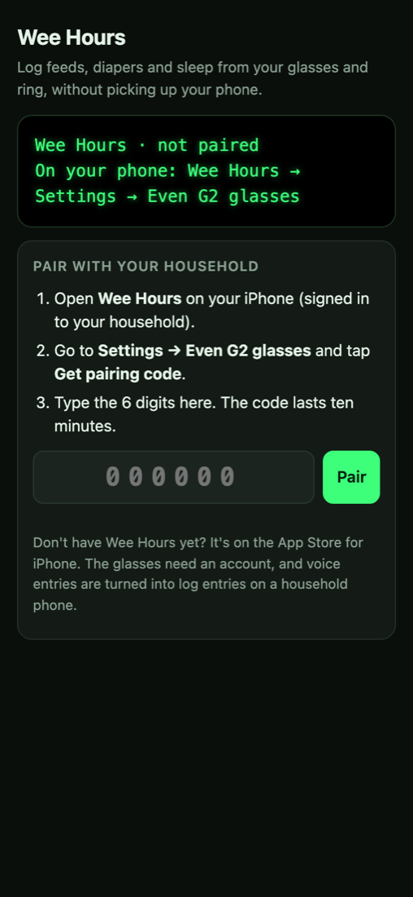
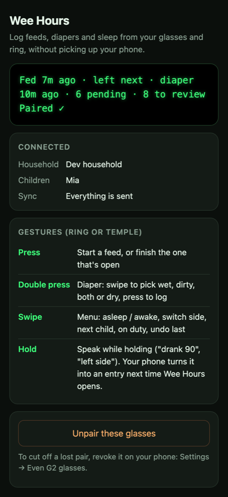
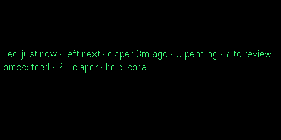
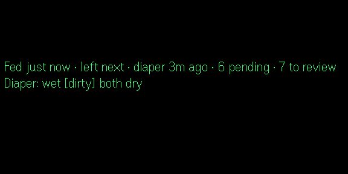

Release walkthrough · 2026-10-23
Putting the Wee Hours glasses app on the Even Hub
Wee Hours 0.13.0 is the first release with a glasses app people can actually install. You pair it with a six-digit code from the iPhone, and it talks only to the Wee Hours Worker. The release has been cut; what's left is yours: check it on real glasses, then upload the package in the Even Hub developer portal, since the portal has no upload API. Tick the steps as you go; the ticks are kept in this browser.
Already verified
- 55 TypeScript tests, typecheck, builds and the isolation check, all green in CI on
6167209. - 16 integration checks of the glasses API against the local stack (
projects/weehours/scripts/test-glasses-api.mjs, also in CI): codes, single use, throttling, events, voice upload, unpairing. - Even Hub simulator, end to end (
scripts/glasses-sim.sh --e2e): it pairs, then press, double press and hold-to-speak land in the database. - Production is serving the new endpoints: a CORS preflight to
/api/glasses/stateanswers 204.
Not verified yet
- Real G2 glasses and the R1 ring: BLE lag, font metrics, the real microphone. The simulator fakes all three.
- A Release iPhone build against production: tapping Get pairing code for real. The scripts tested the same request.
- The portal itself: neither the repo nor the CLI documents its screens. §8 says what the package declares and what to look for.
2How it fits together
The glasses never see your Supabase sign-in or project. The phone asks the Worker for a code, the glasses trade the code for their own token, and from then on every read and write goes through the Worker, which checks it and stores it with the service key. Green marks what 0.13.0 added.
Code: projects/weehours/services/web/src/worker/glasses.ts (API), projects/weehours/apps/glasses/src/ (plugin), projects/weehours/apps/ios/App/Sources/GlassesSettingsView.swift (pairing screen). Decision: projects/weehours/docs/decisions.md, "Glasses release".
3Get the package
The release workflow packed the plugin from the tagged commit and attached it. Download it into a folder of its own:
mkdir -p ~/Downloads/weehours-glasses && cd ~/Downloads/weehours-glasses gh release download weehours-v0.13.0 --repo tianhaoz95/hejitech-apps --pattern '*.ehpk'
You get weehours-glasses-0.13.0.ehpk. It's also on the release page under Assets. To rebuild the same package locally (from the repo root, on the release commit):
npm run package -w @weehours/glasses # → projects/weehours/apps/glasses/build/weehours.ehpk
| Package ID | com.hejitech.weehours.glasses |
|---|---|
| Name | Wee Hours |
| Version | 0.13.0, the iPhone app's version, stamped in by apps/glasses/scripts/pack.mjs |
| Minimums | Even app 2.2.10 · SDK 0.0.16 |
| Permissions | network, whitelist https://weehours.hejitech.workers.dev only ("Send your log entries and voice captures to your household")g2-microphone ("Hold to speak a log entry; your phone turns it into an entry") |
| Languages | English |
- Downloaded weehours-glasses-0.13.0.ehpk
4Get 0.13.0 on your iPhone
Pairing needs the new Settings screen, which ships in 0.13.0. The release started weehours-testflight.yml, which uploads the build and then waits for App Store Connect's verdict (an accepted upload can still be rejected while it's processed).
- Check the run:
gh run list --workflow weehours-testflight.yml --limit 1. It must end green, which means Apple processed the build, not just accepted the upload. - Install 0.13.0 from TestFlight and sign in to your household.
- Open Settings → Even G2 glasses. You should see Get pairing code.

- TestFlight run greenProcessed by Apple, not just uploaded
- 0.13.0 installed and the glasses screen opens
5Try it on your glasses before uploading
The CLI's qr command makes a QR code the Even app scans to load a plugin from a URL, so you can run the release build on your glasses without publishing anything. A production build (not npm run dev) talks to the live Worker, the same as the store version will.
cd projects/weehours/apps/glasses
npm run build
npx vite preview --host 0.0.0.0 --port 5173 &
npx evenhub qr --port 5173 # add --ip <your Mac's Wi-Fi address> if it guesses wrong
- Your iPhone and Mac must be on the same Wi-Fi; the Even app loads the page from your Mac.
- In the Even Realities app, scan the QR code. The glasses show Wee Hours · not paired and the phone shows the pairing page (§6).
- When you're done, stop the preview server (
kill %1).
- Plugin loaded on the glasses from the QR codeHUD reads "Wee Hours · not paired"
6Pair
- On the iPhone: Settings → Even G2 glasses → Get pairing code. A six-digit code shows, with a countdown from ten minutes.
- On the Wee Hours page in the Even app, type the six digits and tap Pair.
- Within a few seconds the iPhone shows "Even G2 paired" and the glasses appear under Paired glasses. The glasses show your status line.


- Got a code on the iPhone
- Glasses paired; the iPhone lists them
7Hardware checklist
Do each on the ring and once on the temple touchpad. The entry should show on the iPhone within a second or two while Wee Hours is open (the Worker pings open phones after every write).


- Press → bottle started; press again → finishedBreastfeeding households: starts nursing on the suggested side
- Double press → swipe to dirty → pressA dirty diaper on the iPhone, logged under your name
- Swipe → menu: Fell asleep / Woke up, On duty, Undo last, BackWith two children: "Switch to <name>" and the name on the HUD's first line
- Hold, say "drank 90", release"Captured ✓"; the iPhone asks or logs it when Wee Hours opens. A tap shorter than 0.3 s says "Too short"
- Finish a bottle, then hold and say "drank half" within two minutesOne entry with the amount, not two
- Phone in airplane mode → log a diaper → back onlineHUD shows "· 1 offline", then it sends on the next refresh (15 s)
- HUD text fits and reads wellThe simulator doesn't match the glasses' fonts or the container limits
- Unpair on the iPhone → the glasses say "not paired" within 15 sThen pair again for daily use
8Upload to the Even Hub
login, init, pack and qr). The steps below are the outline; follow the portal's own labels where they differ, and tell an agent what you saw so it can go into docs/DEPLOY.md §4.- Sign in to the Even Hub developer portal with your developer account (the one
npx evenhub loginuses). - Create the app, or open it if it already exists, for package ID
com.hejitech.weehours.glasses. - Upload
weehours-glasses-0.13.0.ehpkas version 0.13.0. The portal should read the name, version, minimums and permissions from the package (§3 table); check they match. - Fill in the listing with what the package doesn't carry (suggested text below), then submit for review.
| Short description | Log feeds, diapers and sleep from your glasses and ring, without picking up your phone. |
|---|---|
| Description | Press the ring or temple to start and finish a feed, double press for a diaper, swipe for sleep, duty and undo, and hold to speak an entry. The glasses show the same one-line status as the Wee Hours iPhone app. Pair with a six-digit code from Wee Hours → Settings → Even G2 glasses. What you say is turned into an entry on your phone, never on a server. Needs Wee Hours for iPhone and an account. |
| Screenshots | scripts/glasses-sim.sh --e2e writes HUD screenshots to projects/weehours/report/v0/site/screenshots/. They're RGBA with the text in alpha, so composite them on black (the HUD images above were made that way). Restore the committed ones afterwards with git checkout. |
| Privacy policy | https://weehours.hejitech.workers.dev/privacy/ |
| Support | https://weehours.hejitech.workers.dev/support/ |
| Category | Whatever is closest to health, lifestyle or productivity |
- Package uploaded; name, version and permissions match
- Listing filled in and submitted
- Approved and installable from the Even Hub
9After it's live
- Install from the Even Hub (replacing the sideload), check it's still paired or pair again, and log one entry.
- Tell an agent what the portal asked for, so the exact steps go into
projects/weehours/docs/DEPLOY.md§4 and the next upload is a checklist. - From now on it's the same every time:
scripts/cut_release.sh weehoursattachesweehours-glasses-<version>.ehpkto the release, and you upload it. The Worker side deploys on push. The plugin only needs a new upload whenapps/glasseschanged. Releases that only touch the iPhone app still get a package, and you can skip uploading it. - Archive this report once it's done:
.claude/skills/heji-archive-reports/reports.py archive 2026-10-23-weehours-glasses-even-hub.
10If something's off
| "That code didn't work" | Codes last ten minutes and work once, and asking for a new one cancels the old one. Get a fresh code. |
|---|---|
| "Too many wrong codes" | Ten wrong codes from one network lock pairing for ten minutes. Wait, then use a fresh code. |
| "These glasses aren't paired any more" | The token was unpaired on a phone, or that account left the household. Pair again. |
| Gestures show "offline" | The phone running the Even app has no connection, or the Worker is down. Entries wait in the glasses' outbox and send on the next refresh. |
| A voice entry never appears | A household phone has to open Wee Hours to process it (it shows in Needs review if unsure). The HUD's "N pending" counts the ones waiting. |
| "Logging opens once your baby arrives" | Every child in the household is expected (no birth date). The glasses don't log movements. |
| Pack fails locally | The packer refuses an app.json that whitelists 127.0.0.1 or localhost, and the microphone permission must be g2-microphone. |
| Settings says the trial ended | Pairing needs a plan or the trial, like the watch. Glasses that are already paired keep logging. |
Report: reports/archive/2026-10-23-weehours-glasses-even-hub · serve with script/serve.sh · release weehours-v0.13.0